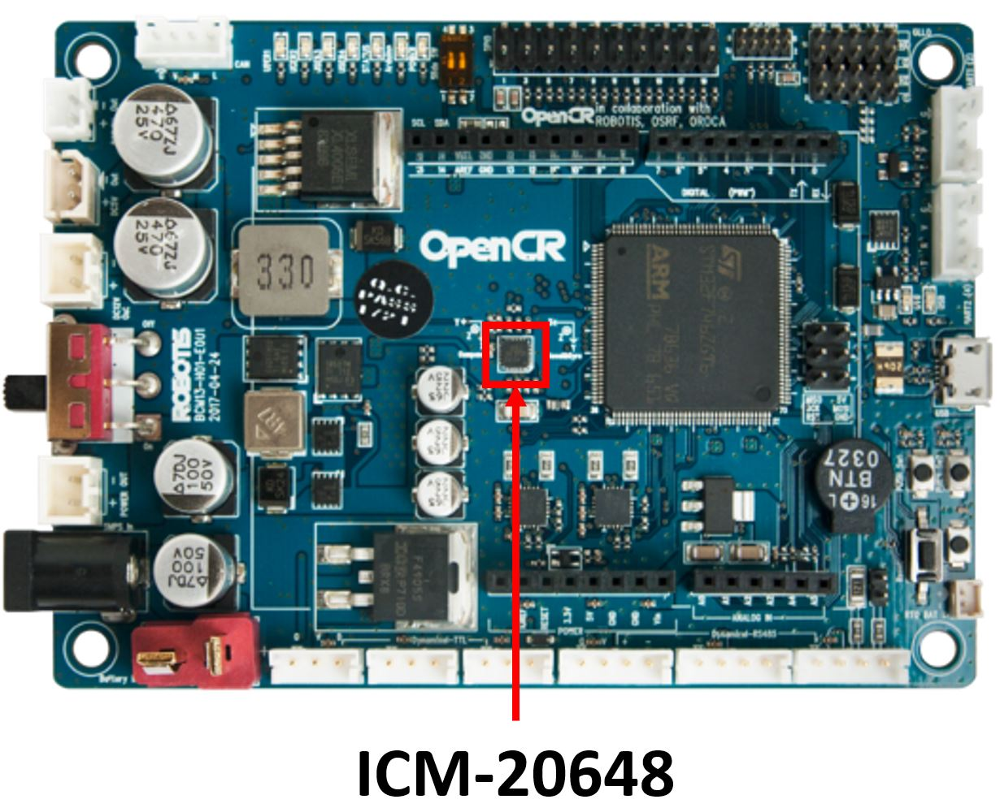
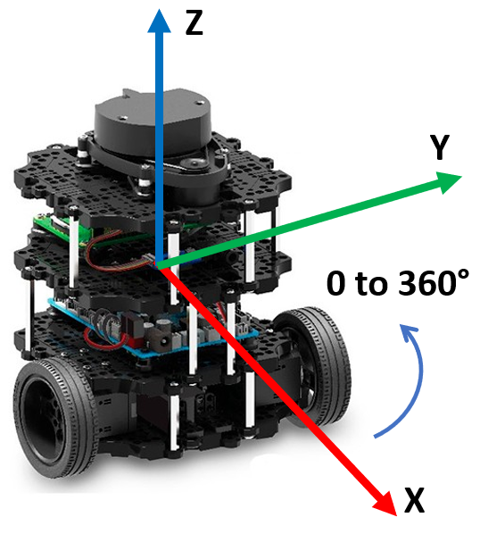

Inertial Measurement Unit#
A note on this document#
Now that you have a better understanding of the Linux operating system and Python programming language the Jupyter Notebooks will be used primarily to guide you through the In-Class Exercises and Laboratories. You will execute the majority of your commands and code within the Linux terminal.
Purpose#
In practice, an inertial measurement unit (IMU) device provides orientation, angular velocity, and linear acceleration. The ICM-20648 6-Axis MEMS MotionTracking Device from TDK includes a 3-axis gyroscope, 3-axis accelerometer, and a Digital Motion Processor (DMP). This IMU is integrated on the OpenCR1.0 board, an open source robot controller embedded with an ARM Cortex-M7 processor. The OpenCR combines sensor data using an EKF to generate IMU estimates 170 times a second.

The IMU provides values that are part of the robot state and allow the robot to navigate more accurately. Combined with data from the tachometers these values provide the odometry of the robot to estimate change in position over time. We will primarily use the IMU to perform 90 and 180 degree turns.

Calibrating the IMU#
As described above, there are a number of different sensors that work together to provide the attitude and heading estimates for the Turtlebot3. These sensors are sensitive to magnetic fields which are unique to locale and device. As you will learn in future ECE classes, all electronic devices create small magnetic fields. Even electrons traveling over a wire create magnetic fields. The OpenCR board and IMU are strategically placed in the center of the robot for best attitude and heading performance, however, this location is also in the center of a number of magnetic fields. Luckily for us, the creators of the Turtlebot3 were aware of these issues and whenever you run the serial node to connect to the robot the IMU is calibrated.
Setup#
The ICM-20648 is already integrated into the Turtlebot3 robot, therefore, there is no setup required. Whenever the serial node is ran to connect to the OpenCR board, the IMU is initialized and will start publishing data.
Test the IMU#
Open a new terminal on the master and run roscore and setup for statistics:
roscore
rosparam set enable_statistics true
Create a secure shell connection to your Robot and launch the Turtlebot3 core launchfile.
roslaunch turtlebot3_bringup turtlebot3_core.launch
Open a new terminal on your Master and observe what topics are running.
You should note two topics of interest: /imu and /odom.
Echo the output of each of the topics and rotate the Robot to see the values change.
The /imu topic combines information from the gyroscope and accelerometer to provide orientation, angular velocity, and linear acceleration. The /odom topic combines the information from the /imu topic and tachometers to estimate position, orientation, and linear and angular velocities.
Both of these topics provide the orientation of the robot using a quaternion representation. While quaternions can make computation easier, they are not very human readable, so we will convert to Euler angles. To do this we will use a Python library called squaternion.
The two main functions we will use from the squaternion library:
First we will need to create a Quaternion object:
q = Quaternion(w, x, y, z)
Then we will conver that Quaternion to an Euler:
e = q.to_euler(degrees=True)
Now we have e, an array representing our Euler angles, e[roll, pitch, yaw].
You can keep the node running for the next portion of the lesson.
Write the Subscriber#
In a new terminal on the Master, create an ice6 package which depends on the geometry_msgs, rospy, and turtlebot3_bringup packages, compile and source the workspace:
cd ~/master_ws/src/ece387_master_sp2X-USERNAME/master catkin_create_pkg ice6 std_msgs rospy turtlebot3_bringup cd ~/master_ws catkin_make source ~/.bashrc
Create an IMU node:
roscd ice6/src touch imu_sub.py
Copy and complete the below code using the GUI editor tool, Sublime. Browse to the subscriber you just created and double-click. This will open the file in Sublime (if it is open in any other editor, stop, raise your hand, and get help from an instructor)
💡️ Tip: Look for the “TODO” tag which indicates where you should insert your own code.
#!/usr/bin/env python3
import rospy
from squaternion import Quaternion
# TODO: import message type sent over imu topic
class IMU:
"""Class to read orientation data from Turtlebot3 IMU"""
def __init__(self):
# TODO: subscribe to the imu topic that is published by the
# Turtlebot3 and provides the robot orientation
# nicely handle shutdown (Ctrl+c)
self.ctrl_c = False
rospy.on_shutdown(self.shutdownhook)
# The IMU provides yaw from -180 to 180. This function
# converts the yaw (in degrees) to 0 to 360
def convert_yaw (self, yaw):
return 360 + yaw if yaw < 0 else yaw
# Print the current Yaw
def callback_imu(self, imu):
if not self.ctrl_c:
# TODO: create a quaternion using the x, y, z, and w values
# from the correct imu message
# TODO: convert the quaternion to euler in degrees
# TODO: get the yaw component of the euler
yaw =
# convert yaw from -180 to 180 to 0 to 360
yaw = self.convert_yaw(yaw)
print("Current heading is %f degrees." % (yaw))
# clean shutdown
def shutdownhook(self):
print("Shutting down the IMU subscriber")
self.ctrl_c = True
if __name__ == '__main__':
rospy.init_node('imu_sub')
IMU()
rospy.spin()
Save, exit, and make the node executable.
Open a new terminal on the Master and run the imu_sub.py node.
Rotate the Robot and observe the output.
Checkpoint#
Once complete, get checked off by an instructor showing the output of your imu_sub and rqt_graph node. Push your ice6 package to your repo for credit
Summary#
In this lesson you learned how to utilize the on-board IMU and determine the orientation of the Turtlebot3. In the lab that corresponds to this lesson you will apply this knowledge to turn the robot in 90 and 180 degree turns.ROS
Cleanup#
In each terminal window, close the node by typing ctrl+c. Exit any SSH connections. Shutdown the notebook server by typing ctrl+c within the terminal you ran jupyter-lab in. Select ‘y’.
Ensure roscore is terminated before moving on to the lab.